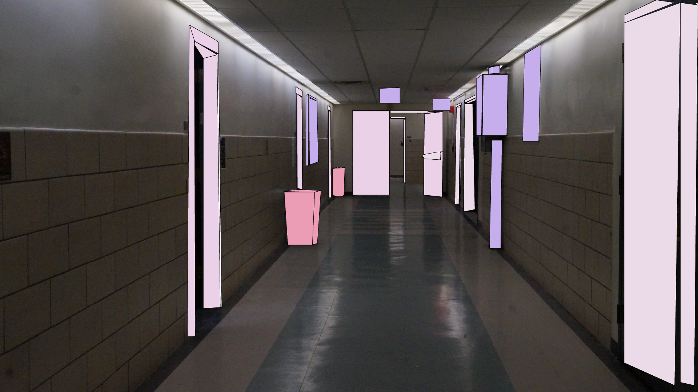

Illustrated Environment


Emotive Eye & Illustrated Environment
This image was taken during our first photoshop assignment, we were tasked to take photos of interesting settings around the school. I took this photo because the sight of an empty hallway at Hunter is rare, and it felt eerie to stand in due to the low lighting. I used image trace and the shape maker tool to outline the most prominent shapes in this image: the doors, doorways, signs and trash cans, and then the walls and floors. I used two shades of pink and a purple.